Reliable Wire Rope Sling Solutions for Lifting, Rigging & Heavy Industrial Applications
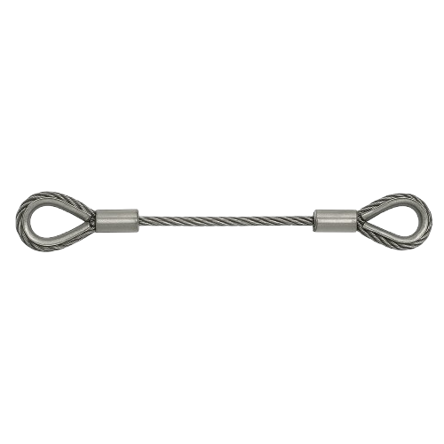
L.R. Engineering Works supplies steel wire rope slings for lifting and rigging work. A sling is a prepared length of wire rope with formed or fitted ends, used to connect a load to lifting equipment. Single-leg and multi-leg assemblies serve different load layouts and connection points.
Wire rope sling assemblies can be produced using hydraulic splicing with aluminium ferrules. End-loop styles and fittings are selected for the intended arrangement, and tailored fitting options can be discussed for specific requirements.
Assembly details can be selected to suit the lifting arrangement and connection points.
The rope end can be secured by hydraulic splicing as part of the sling assembly.
Aluminium ferrules are used with the hydraulic splicing technique described for these assemblies.
End loops can be specified in styles such as soft eye, thimble, and thimble with hook.
Fittings and assembly details can be discussed to suit the intended application.
Common ways wire rope slings connect to a load and multi-point lifting arrangements.
A direct connection from the lifting point to a single point on the load.
The sling passes around the load and through its own eye, forming a loop that tightens when lifted.
The sling passes beneath the load, with both ends connected to the lifting point.
Two sling legs connect to a common master ring for lifting at two load points.
Three sling legs connect to a common master ring for a three-point lifting arrangement.
Four sling legs connect to a common master ring for a four-point lifting arrangement.
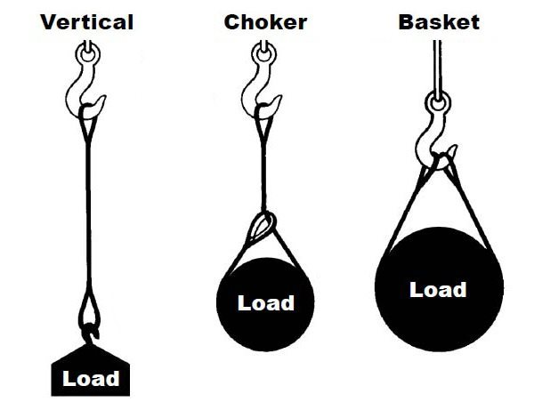
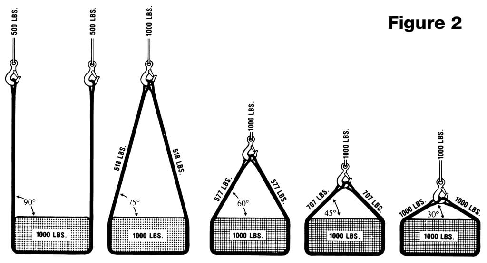
Different wire rope sling assemblies designed for various lifting and rigging applications.
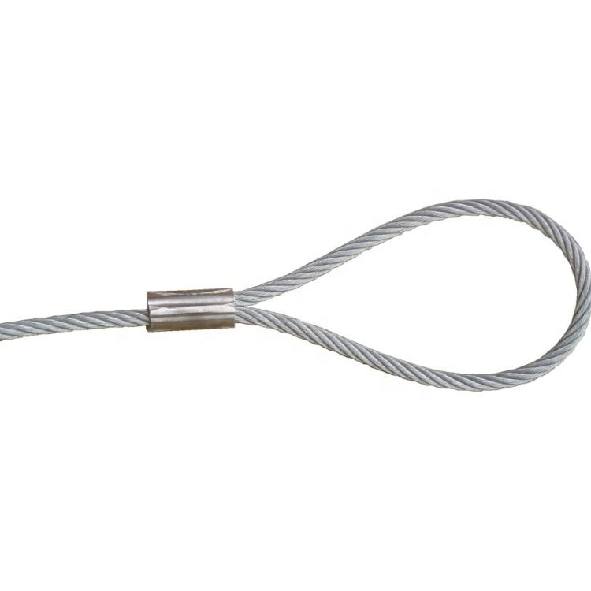
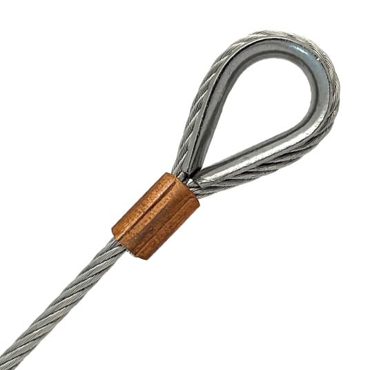
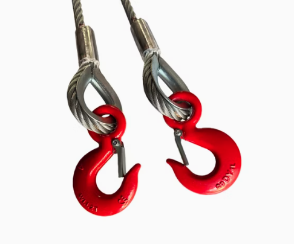
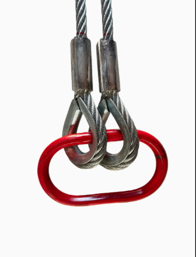
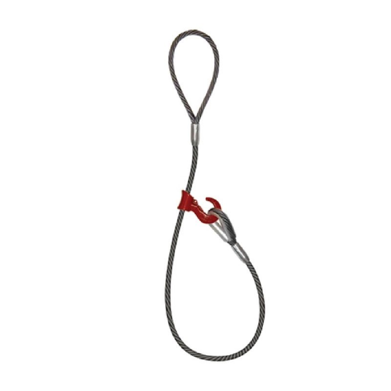
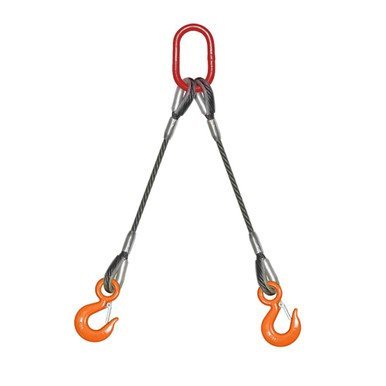
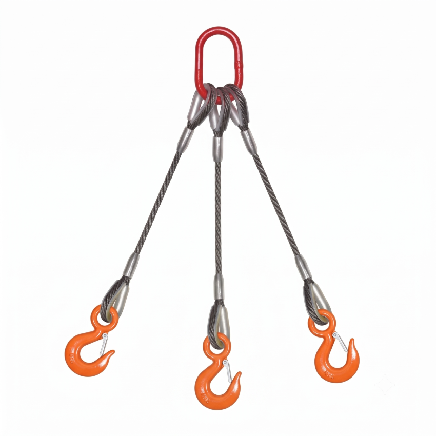
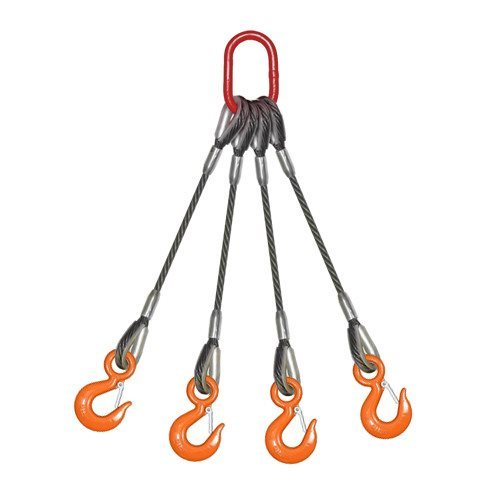
Answers to common questions about sling assemblies and available configurations.